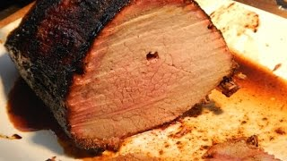

Simple Roast Beef on the Weber

Serves - 6 :: Prep Time - 10 min :: Roast time - 1:20h
This roast beef recipe is a simple and quick way to prepare a roast beef using a Weber BBQ. It is important to have a convection tray and trivet for this recipe.
Great with gravy and roast potatoes!
Ingredients
- 2kg rolled beef roast
- Salt & black pepper
Intructions
- Prepare the barbecue for indirect heat, approx. 200°C.
- Sprinkle salt and black pepper all over the beef.
- Roast the beef over an indirect medium heat in a Weber premium grill rack using a weber drip pan underneath to capture the fat and juices for approximately 1 ½ hours, or until the core temperature reaches 60°C (medium rare).
- Allow to rest for around 20 minutes before, thinly slicing and serving.
Back to homepage